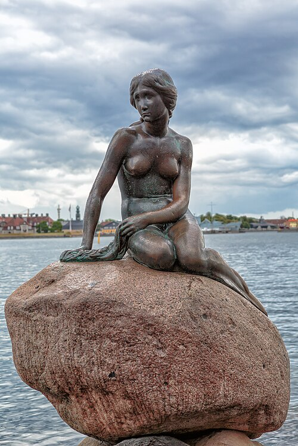

David
Michelangelo
A monumental marble figure that captures strength, focus, and human possibility.
Collection 03
Discover how artists transform stone, bronze, and other materials into lasting forms.
Favourites: 0
Michelangelo
A monumental marble figure that captures strength, focus, and human possibility.

Auguste Rodin
A bronze figure whose stillness gives physical form to deep reflection.

Alexandros of Antioch
An ancient Greek sculpture admired for its poised stance and graceful lines.

Michelangelo
A masterful marble composition balancing tenderness with remarkable detail.

Auguste Rodin
Two figures meet in a sculpture that captures intimacy and movement.

Edvard Eriksen
A much-loved Copenhagen landmark inspired by Hans Christian Andersen's tale.